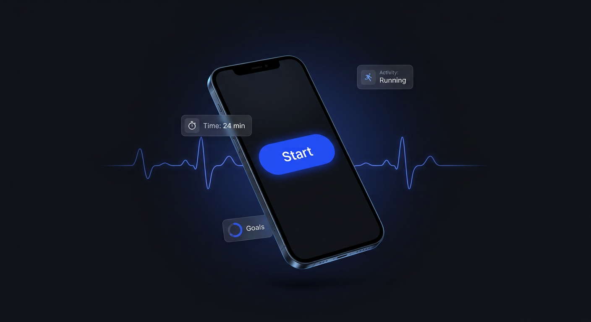
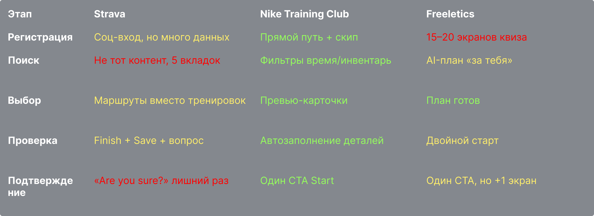
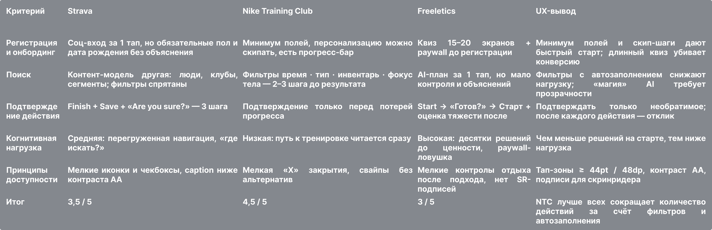
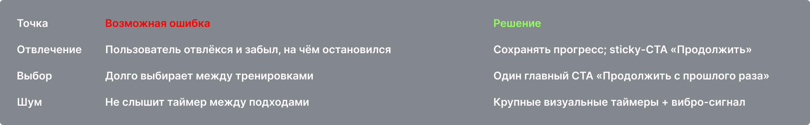
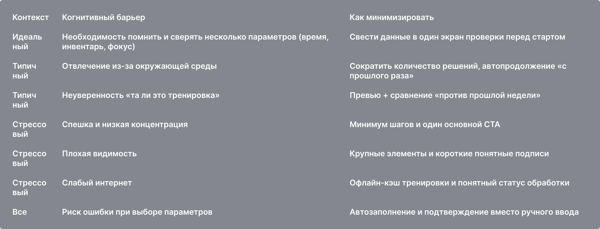
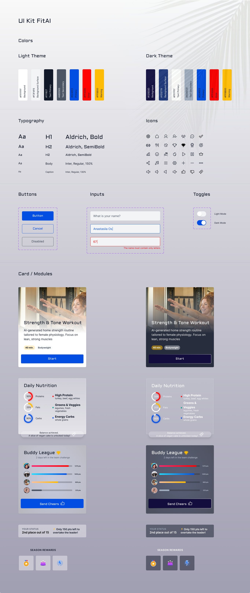
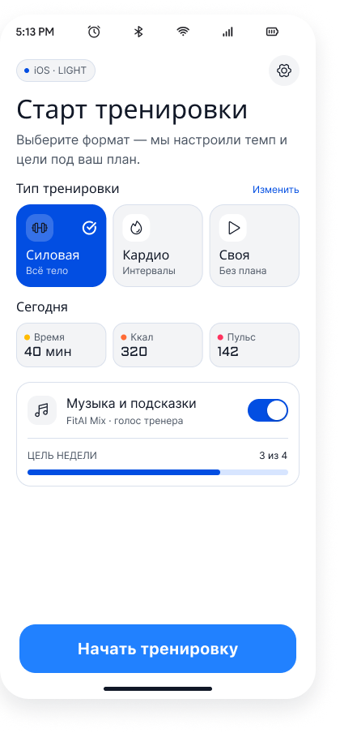
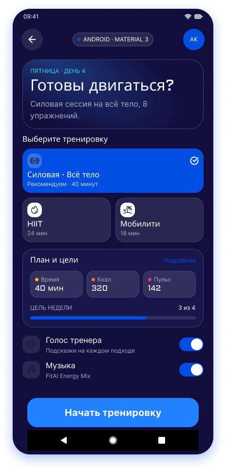
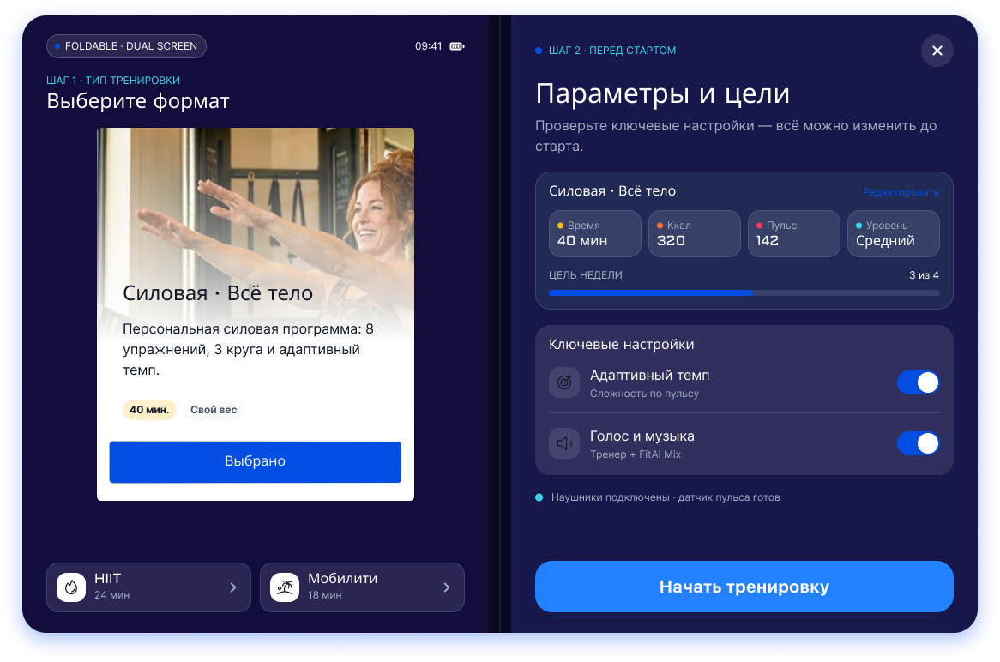
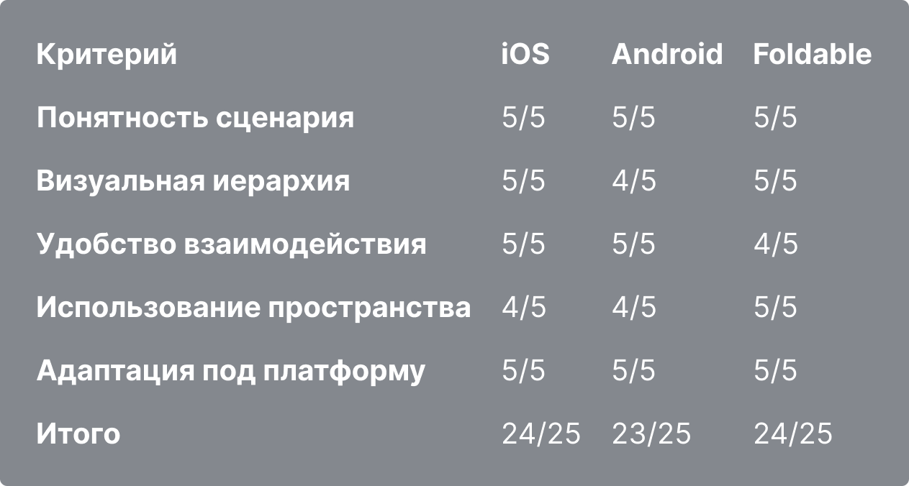

Пришла в дизайн из разработки (React, LG R&D, Aston), поэтому проектирую решения, которые доживают до продакшена — с токенами, состояниями и доступностью по умолчанию.

Фитнес-приложения теряют новичков ещё до первой тренировки. Я прошла весь цикл: исследование конкурентов → сценарии под реальные контексты → дизайн-система для трёх платформ → тест на живых пользователях — и собрала интерфейс, который стартует одним понятным тапом.
UX-аудит Strava, Nike Training Club и Freeletics выявил системные причины оттока на старте:
Сводные баллы чек-листа: NTC 4,5 · Strava 3,5 · Freeletics 3,0 из 5 — даже лучший конкурент оставляет «пять баллов боли».


Старт AI-домашней тренировки должен быть понятен в трёх контекстах (тихий офис / улица+шум / стресс+слабый интернет) и на трёх платформах без потери логики. Критерии: 100% участников стартуют самостоятельно, 0 критичных барьеров в контексте, одна дизайн-система без форков.


Единые токены (Aldrich/Inter, Primary #1A3EF5, тап-зоны 44pt/48dp, Light/Dark на Figma Variables) + платформенные правила: iOS — свайп-back, Material 3 — FAB и ripple, Foldable — двухпанельный мастер-детейл вместо растягивания. Плюс «Правила адаптации UI» — 5 правил для команды, чтобы система не разъезжалась на новых экранах.




3 участника 30–35 лет, каждый на своей платформе (iPhone 14 / Galaxy S23 / Pixel Fold): онбординг → старт тренировки → поддержка команды. Метод «думай вслух», 5 вопросов + устный фидбэк; 15 ответов кластеризованы ИИ и проверены вручную.
| Кластер | Что обнаружено | Участники |
|---|---|---|
| Основное действие (Start) | все определили «Start» как нужное действие без подсказок | 3/3 |
| Интерактивность и отклик | теги-пилюли приняли за кнопки; «Send Cheers» без реакции вызвал повторные тапы | 3/3 |
| Foldable и офлайн | вопросы про вторую панель и доступность тренировки без интернета | 2/3 |

Сделала бы иначе: закладывала бы состояния loading/error/offline с первого дня — именно они дали больше всего вопросов на тесте.
5+ лет в IT и продукте: frontend в R&D Lab LG Electronics, разработчик интерфейсов в Aston (ускоряла приложения на 25% и переводила макеты в код без потери UX), менеджер продукта в KiteGroup (внедрила Design QA, свела дизайн с разработкой). Сейчас — продуктовый дизайн: исследования, сценарии, системы. Говорю с разработчиками на одном языке, потому что сама оттуда.
School 21 (Сбер) — Дизайнер интерфейсов UX/UI, 2026
Яндекс.Практикум — Web Development, 2020
СПбГЛТУ — ландшафтная архитектура, 2026
Русский — родной · English — B2
Каждое решение — с критерием проверки. Токены вместо «на глаз», тест вместо спора, состояние «ошибка» вместо сюрприза.
Открыта к позициям UX/UI-дизайнера в продуктовой команде — СПб / удалённо.